Want something traditional and simple? Then these are the recipes for you!
Sweet and easy treats after a nice meal!
| Dorayaki Pancakes | Ingredients | Recipe |
|---|---|---|
| 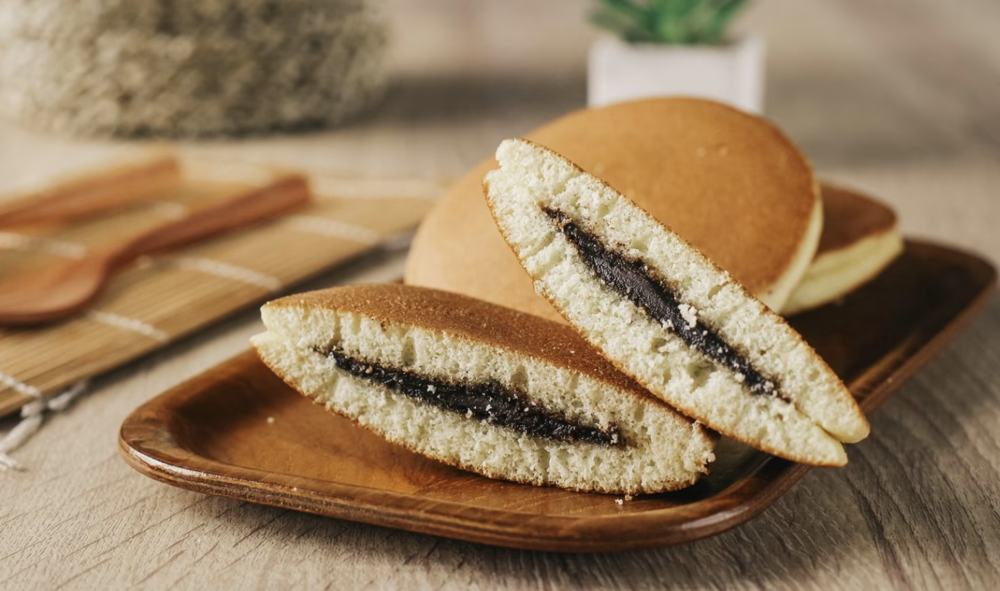 | 100g Japanese pancake mix, 1 egg, 1 tbsp sugar, 2 tbsp honey, 1 tbsp mirin, 70ml milk. And for filling: 150g azuki sweet red bean paste (ready to eat), 200ml whipping cream, and 10g matcha green tea powder or cocoa powder | 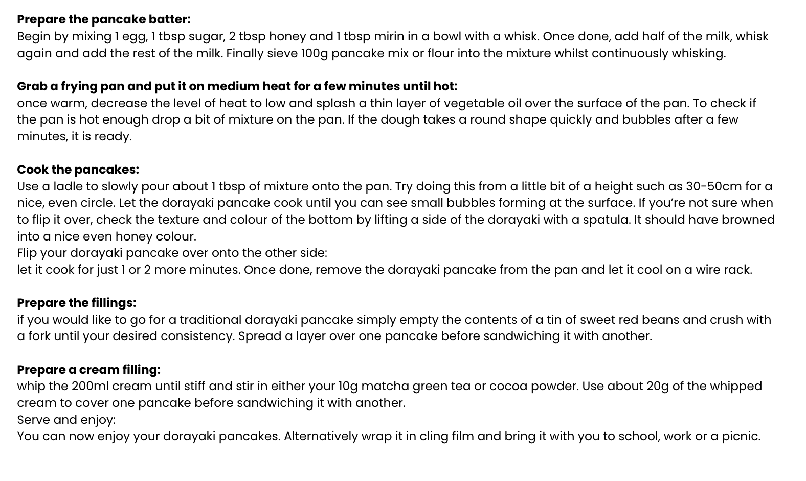 |
| Anmitsu Fruit Salad | Ingredients | Recipe |
|---|---|---|
| 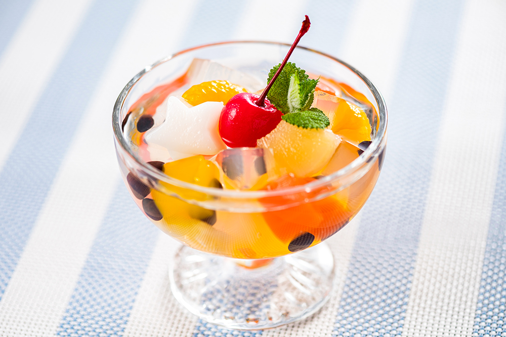 | 1/2 a stick of kanten agar, 50g shiratama ko rice flour, 4 tbsp ready made azuki red beans, 1 small can mandarin segments, strawberry, kiwi or other fresh fruits | 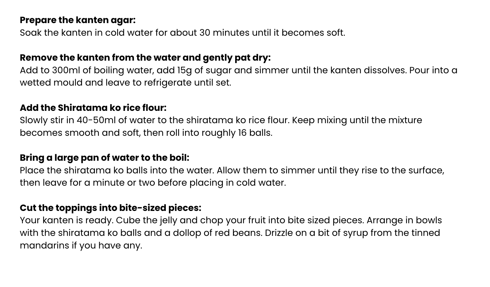 |
| Matcha Parfait | Ingredients | Recipe |
|---|---|---|
| 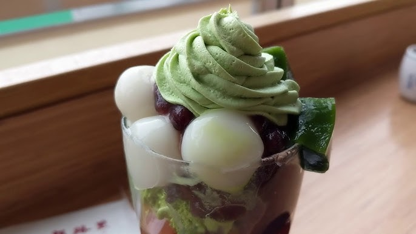 | 4 scoops matcha ice cream, 4 tbsp sweet red beans, 4 chestnuts in syrup, warabi mochi, whipped cream | 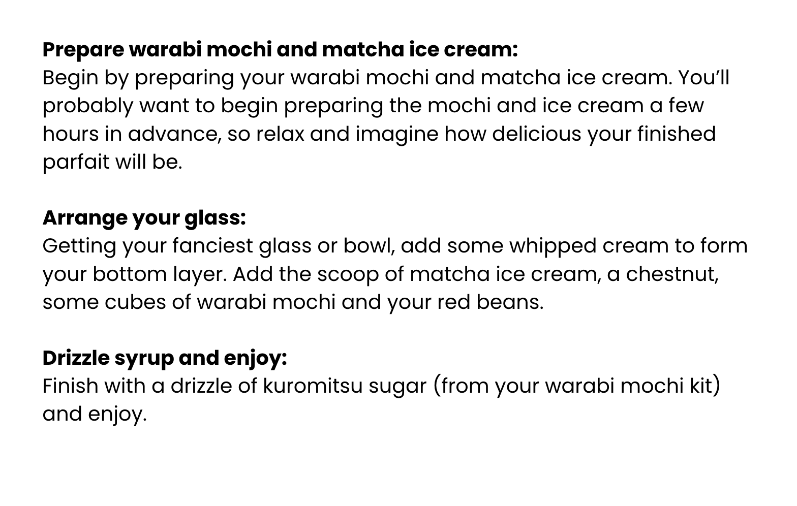 |
Delicious traditional meals that give Japan feels!
| Katsu Curry | Ingredients | Recipe |
|---|---|---|
|
House Vermont Curry (medium hot), Cooked rice, Onion, Potato – cut to 1.5cm / ⅝” cubes, Carrot – sliced to 7mm / ¼” thick pieces, Chicken Cutlet (Japanese Chicken Schnitzel) – cut into 2.5cm / 1″ wide strips | 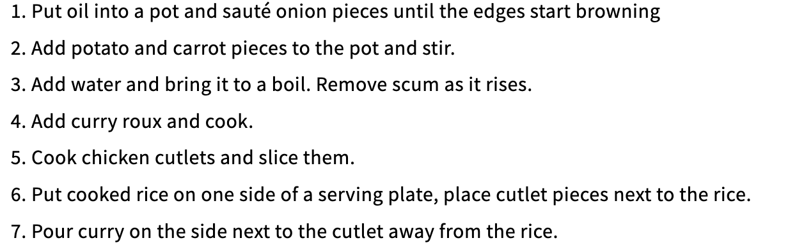 |
| Omurice | Ingredients | Recipe |
|---|---|---|
| 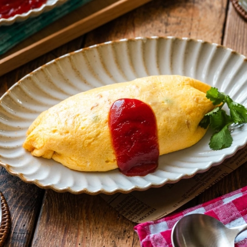 | Eggs, Cooked rice, Ketchup, Chicken, Onions, Butter | 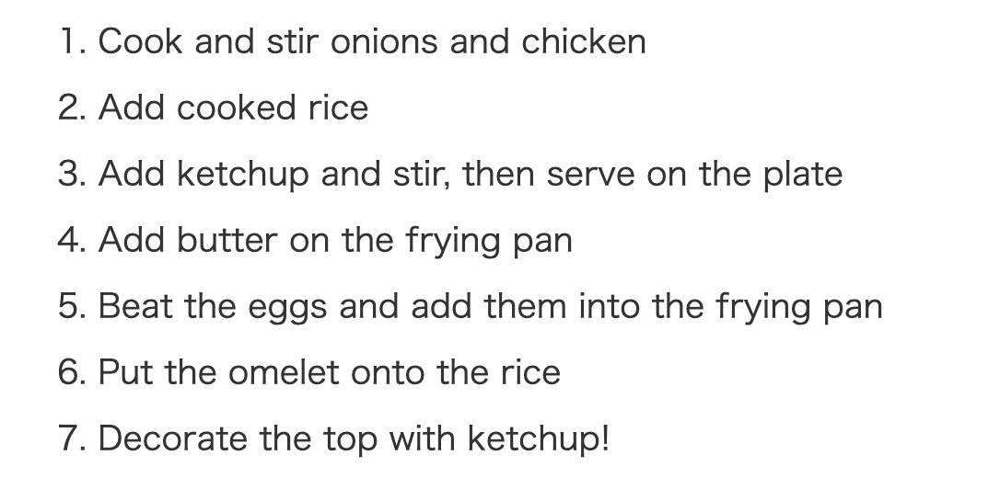 |
| Karaage | Ingredients | Recipe |
|---|---|---|
| 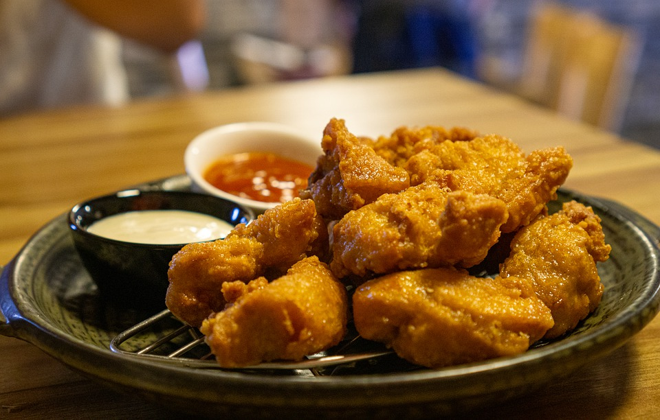 | Boneless chicken thighs, Soy Sauce, Sake (optional), Grated garlic, Grated ginger, Potato starch | 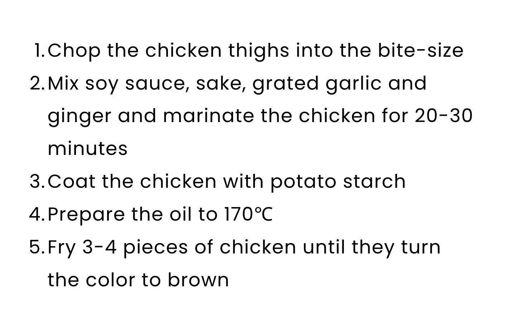 |